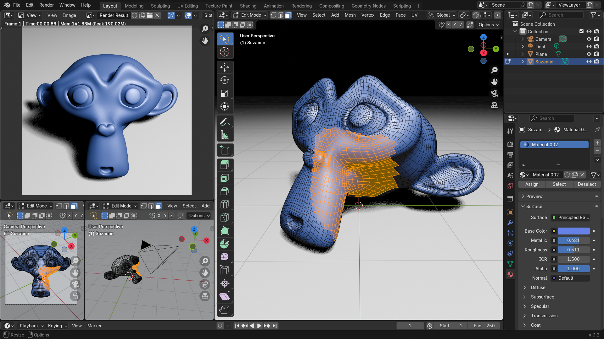
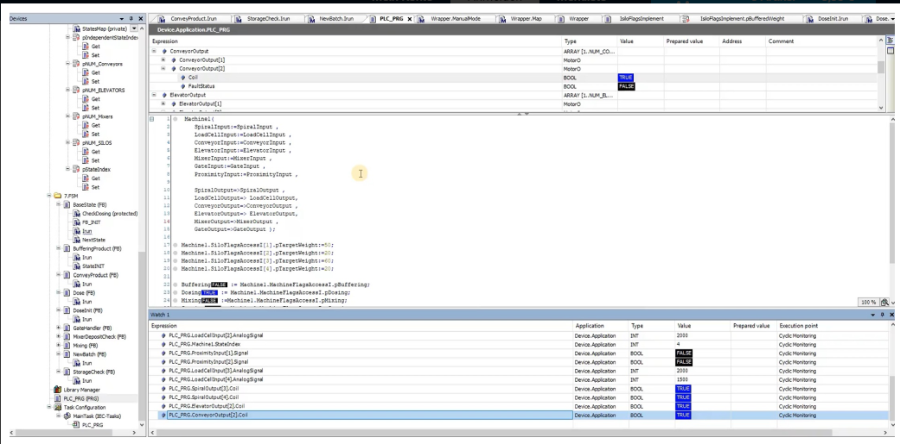
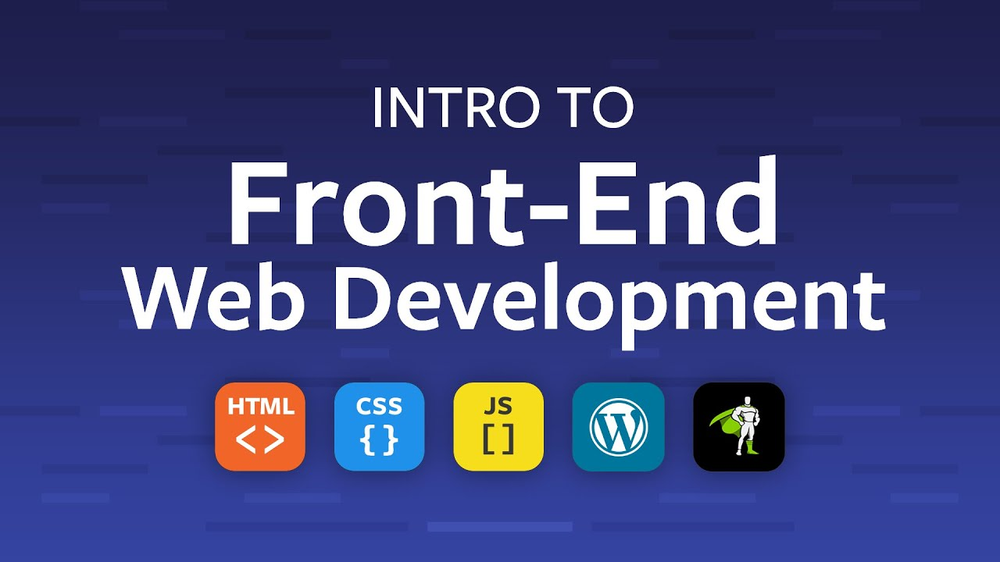
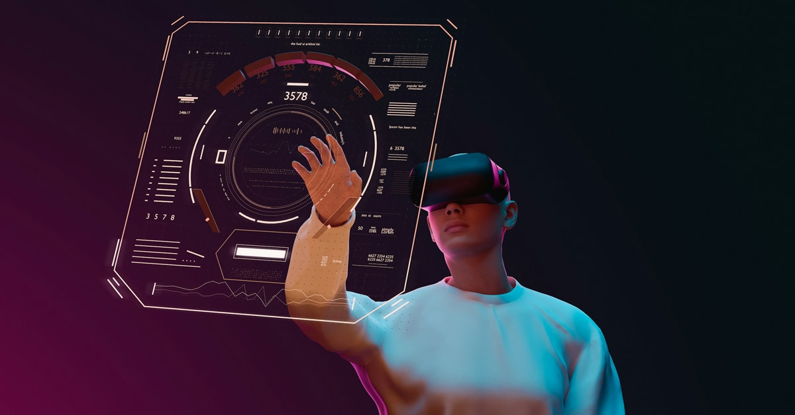
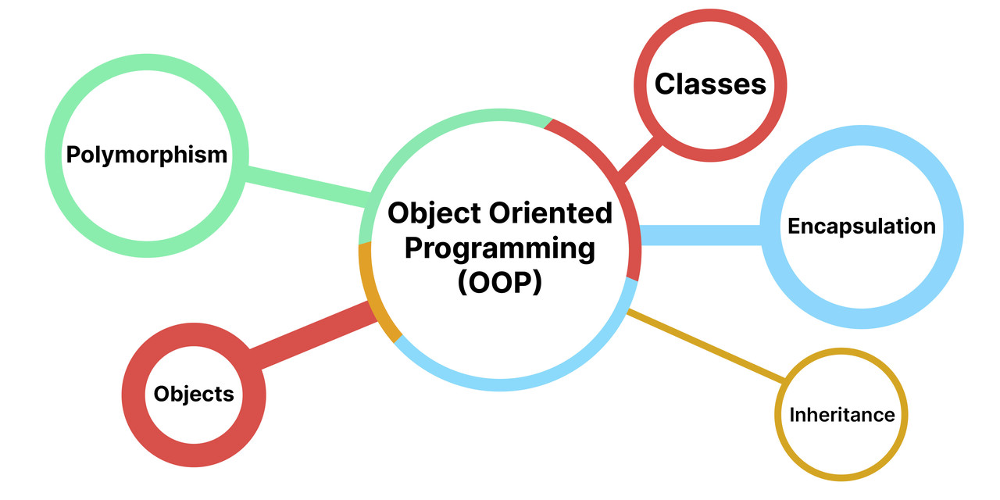
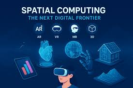
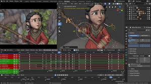
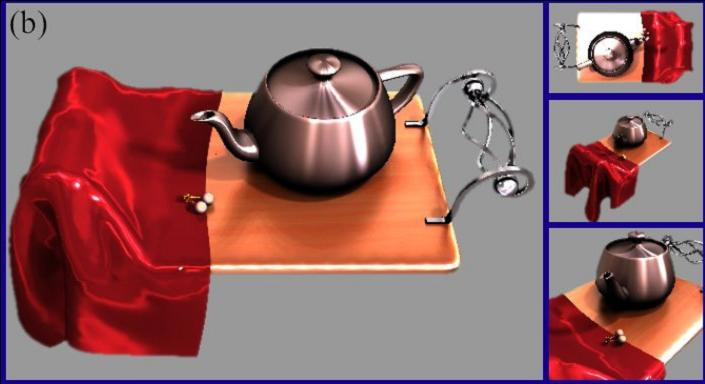
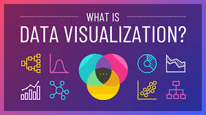

Immersive Digital Media
YEAR 1
Computer Mathematics
This module is designed to provide the student with the fundamental mathematical concepts encountered in the study of a computing discipline.
Data and Operating System Essentials
This module aims to provide the learner with an overview of the purpose, functions and structures of modern computer operating systems and databases.
Digital Storytelling
This module will allow learners to understand, analyse and investigate digital storytelling, and to apply theory and empirical knowledge development with visual media creation.
Digital Video
This module aims to introduce learners to the necessary creative, research and technical skills required to originate and develop digital video material (including linear video, interactive video and immersive 360 video) for multimedia output.
Dynamic Web Design
Dynamic Web Design is an approach to web design aimed at creating websites that provide an optimal viewing and responsive interaction experience across a wide range of devices with a focus on client-side development and efficient web page deployment.

Programming Fundamentals
This subject will equip students with the fundamental components and structures of programming.
YEAR 2

3D Computer Graphics
This module introduces learners to modern 3D computer graphics systems and gives them the understanding of the principles and practice of 3D computer graphics which is required to create high quality content.

Advanced Object Oriented Programming
Learners will develop applications that use polymorphism, interfaces and abstract classes.
Creative Design Practice
This module aims to foster the application of methodologies, confidence and a deeper understanding of the interrelationships of creativity and design within the practices of content creation, adaptation and delivery.

Front- End Development
Front-end web development, also known as client-side development, is that part the development of a web application that is on the front and visible to users. The front-end usually takes the form of an interface inviting the user to interact with the application.

Immersive Technology Foundations
This module gives students the foundation knowledge and skills necessary to design and develop immersive technology experiences using industry standard software and hardware tools such as Unity3D.

Introduction to Object Oriented Programming
This module introduces learners to object oriented programming techniques such as encapsulation, information hiding and inheritance. Learners will also develop their programming and problem solving skills.
YEAR 3
Interaction Design Practice
The aim of this module is to enable the learner to refine interactive processes and practices by which digital interfaces are designed and developed. To provide learners with the framework and critical skills necessary to produce and evaluate UX/UI design at advanced levels.

Virtual, Augmented and Spatial Computing
Virtual and augmented reality, also known as immersive reality, is any technology that “replicates an environment, real or imagined.
Web Application Development
The learner will gain the knowledge and skills to construct and deploy small-to-medium scale web applications found in intranet and low-volume commercial site.
Project Management
The aim of this module is to enable the learner to understand the processes by which software projects can be managed and to gain an appreciation of the effectiveness of Project Management techniques and methodologies.
Digital Media Group Project
This module provides the skills necessary to work effectively as a team member on a digital media project.
Work Placement
This placement module will provide students with an opportunity to apply the theoretical and practical knowledge gained on their programme while working in a professional IT environment.
YEAR 4

3D Graphics and Imaging
The aim of this module is to give learners the necessary mastery of computer graphics animation and imaging to enable them to produce animated 3D graphical content.

Advanced Computer Graphics and Imaging
The aim of this module is to introduce learners to advanced techniques in computer graphics and imaging to enable them to produce high-quality 3D graphical content for a variety of application area.
Advanced Mobile Application Development (Elective)
Learners will develop the knowledge and skills required to critically evaluate, design and develop advanced mobile applications.
Advanced Programming Concepts
This module is intended to expose students to the advanced features of modern programming practice.
Big Data Mining and Analysis (Elective)
The aim of this module is to build the learners understanding of the opportunities of using large data sets to drive business performance and support the decision making process.

Data Visualisation (Elective)
This module aims to provide an understanding of the theories and technologies underpinning data visualisation and professional story-telling through data.